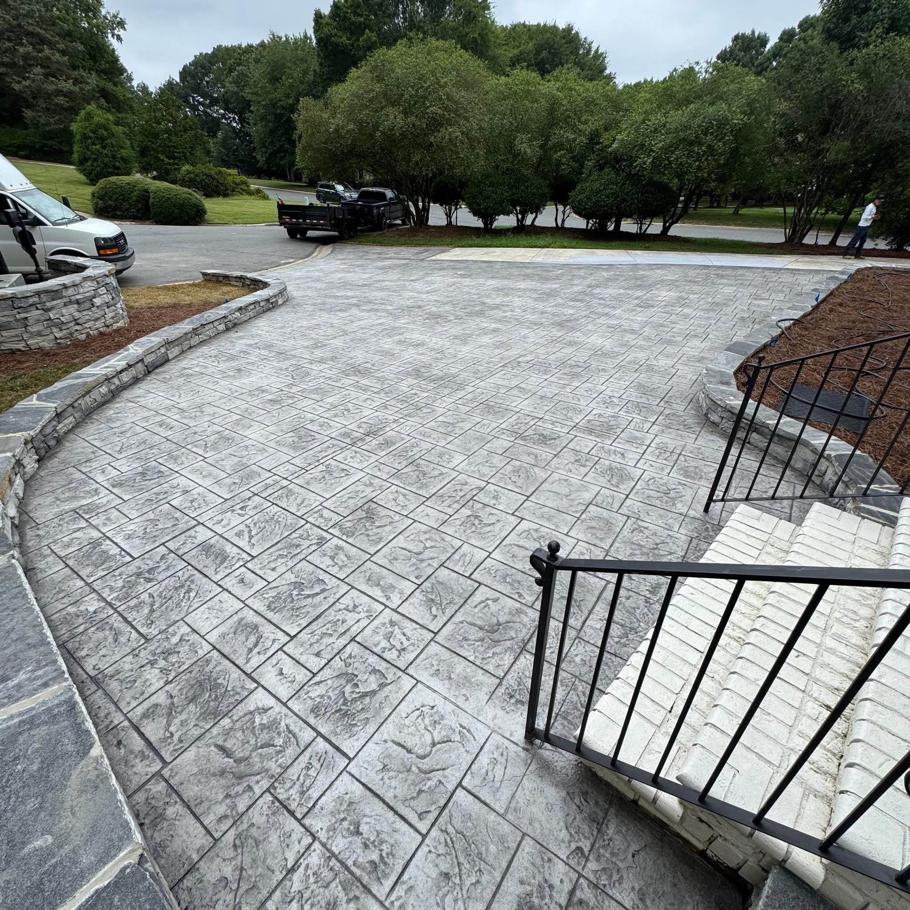
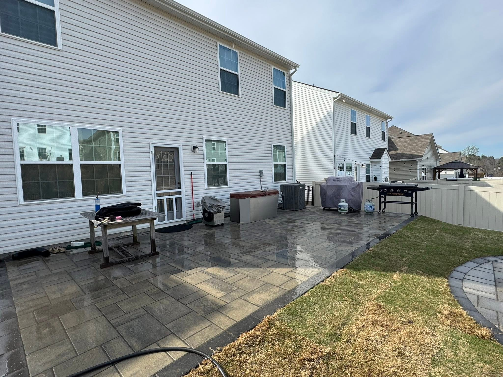
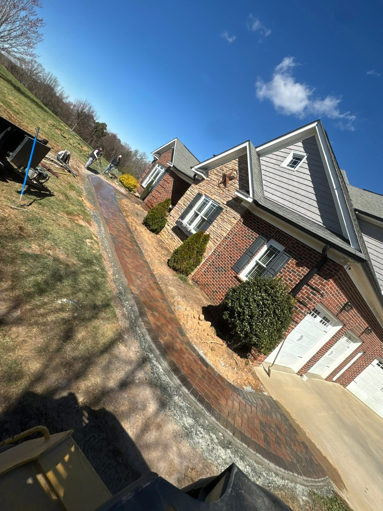

Concrete Driveways, Patios, Walkways & Pavers in North Carolina
Chimas Construction provides professional concrete and hardscaping services for homeowners throughout Charlotte, Raleigh, Greensboro, Winston-Salem, Huntersville, Waxhaw, Durham, Wilmington and surrounding areas.
Concrete & Hardscaping Built for Your Home
At Chimas Construction, we help homeowners improve their outdoor spaces with professionally installed concrete and paver solutions. From driveways and patios to walkways and concrete around in-ground pools, we focus on quality workmanship and durable results designed to complement your property.
Our Services
Explore our concrete and hardscaping services, including stamped and non-stamped options for many residential projects.

Concrete Driveways
Choose from stamped or non-stamped concrete driveways designed to provide a durable and attractive entrance to your home.

Concrete Patios
Create a comfortable outdoor space with a stamped or non-stamped concrete patio built for relaxing and entertaining.

Concrete Walkways
Improve access and curb appeal with stamped or non-stamped concrete walkways and paths.

Retaining Walls
Strong and reliable retaining wall solutions designed to improve the structure and appearance of your property.

Pavers
Enhance your outdoor space with professionally installed pavers for patios, walkways, pool areas and other residential applications.

Concrete Around In-Ground Pools
We install concrete around in-ground pools, including stamped or non-stamped options, as well as paver solutions for pool areas.
Stamped or Non-Stamped Concrete
Choose the concrete style that best fits your home's appearance, functionality and budget.

Stamped Concrete
Stamped concrete can add decorative patterns and textures to driveways, patios, walkways and pool areas while providing the durability of concrete.

Non-Stamped Concrete
Non-stamped concrete provides a clean, traditional appearance and is a practical option for driveways, patios, walkways and other residential concrete projects.
Concrete & Pavers Around In-Ground Pools
Create a finished outdoor space around your in-ground pool with concrete or paver installation.

Pool Area Concrete & Pavers
Whether you are looking for stamped concrete, non-stamped concrete or pavers around your in-ground pool, we can help create a finished outdoor area that complements your property.
Concrete Pool Areas
Concrete around an in-ground pool can be installed as part of a larger patio or outdoor area or as a separate project surrounding the pool.
Our Work: Before & After Projects
See examples of transformations completed by Chimas Construction.
Before

After

Before

After

Before

After

Before

After

Before

After

Before

After

Areas We Serve
Chimas Construction provides concrete and hardscaping services throughout major metro areas in North Carolina. We serve homeowners in Charlotte, Raleigh, Greensboro, Winston-Salem, Huntersville, Waxhaw, Durham, Wilmington and surrounding communities.
Why Choose Chimas Construction?
Quality Workmanship
We focus on delivering durable concrete and hardscaping solutions designed to improve your property.
Residential Services
We work with homeowners to create practical and attractive outdoor improvements.
Free Estimates
Contact Chimas Construction to discuss your project and request a free estimate.
Ready to Start Your Project?
Contact Chimas Construction today to discuss your concrete or hardscaping project.
Request a Free EstimateRequest a Free Estimate
Tell us about your project and we'll get back to you.